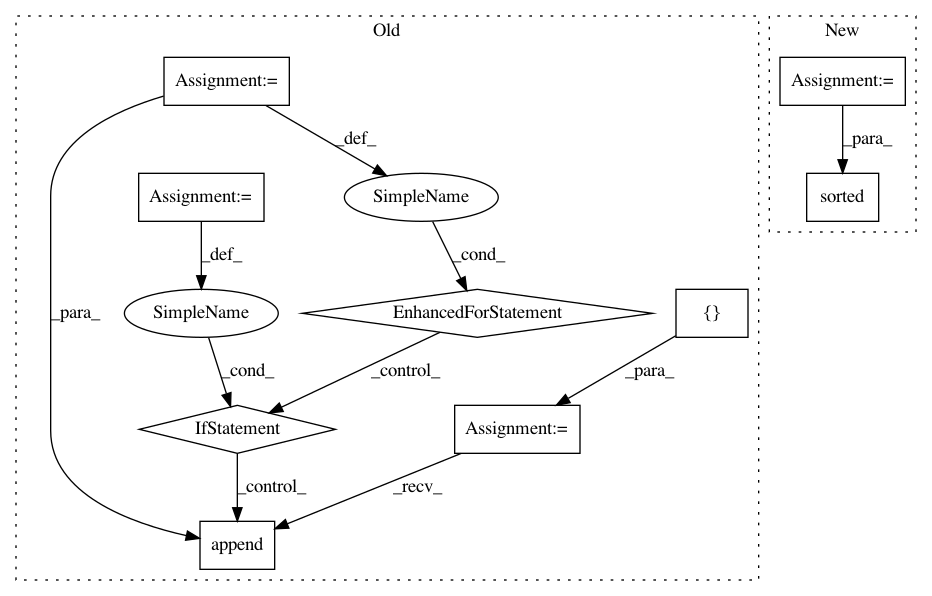

66348a9259bc034d0f6b21cfb554f8b2f0af94b0,tools/triage_tests.py,,find_failing_tests,#Any#Any#,327
Before Change
Find all of the failing tests by looking for files with
`-failed-diff` at the end of the basename.
entries = []
for root, dirs, files in os.walk(result_images):
for fname in files:
basename, ext = os.path.splitext(fname)
if basename.endswith("-failed-diff"):
path = os.path.join(root, fname)
entry = Entry(path, result_images, source)
entries.append(entry)
entries.sort(key=lambda x: x.name)
return entries
After Change
Find all of the failing tests by looking for files with
`-failed-diff` at the end of the basename.
return sorted(
(Entry(path, result_images, source)
for path in Path(result_images).glob("**/*-failed-diff.*")),
key=lambda x: x.name)
def launch(result_images, source):
In pattern: SUPERPATTERN
Frequency: 3
Non-data size: 9
Instances
Project Name: matplotlib/matplotlib
Commit Name: 66348a9259bc034d0f6b21cfb554f8b2f0af94b0
Time: 2018-03-23
Author: anntzer.lee@gmail.com
File Name: tools/triage_tests.py
Class Name:
Method Name: find_failing_tests
Project Name: elbayadm/attn2d
Commit Name: e797f63316a699aceb47f896da2f89588ba15667
Time: 2019-05-16
Author: myleott@fb.com
File Name: scripts/rm_pt.py
Class Name:
Method Name: every_n_checkpoints